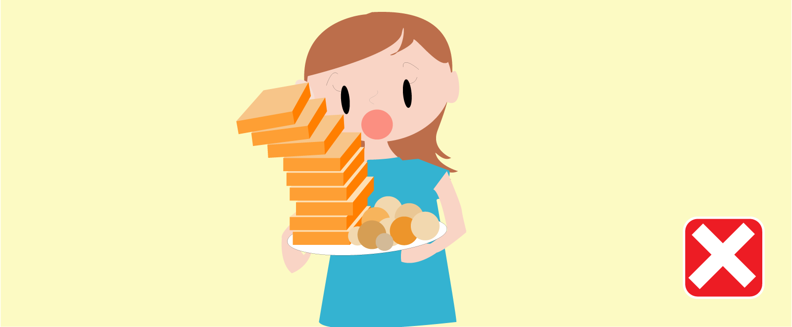
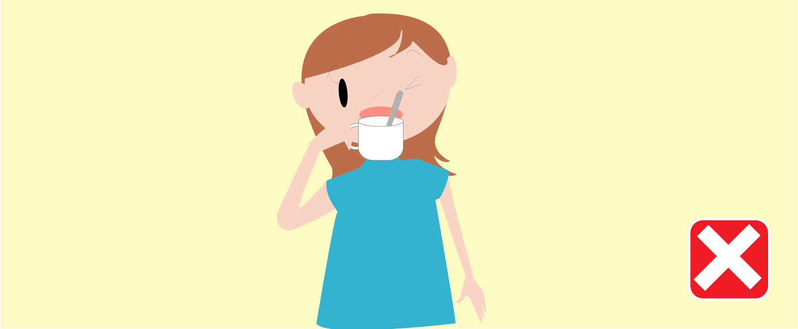
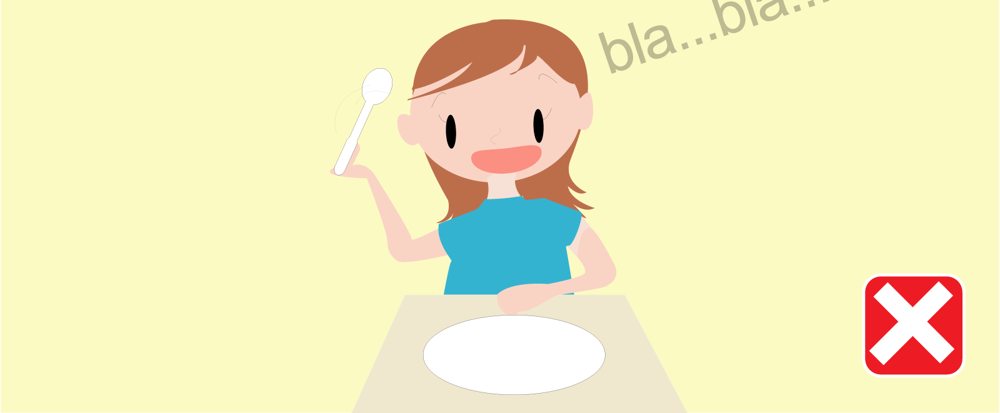
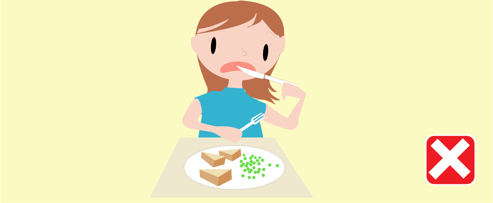

Do not take too much food and do not worry that you will not be full because you can go for many rounds.

Do not drink tea or coffee when there is still a teaspoon in the cup. When you finish using the teaspoon, put it on the plate.

Do not play with the spoon, fork or knife when talking to other people. It is considered as bad manners and also makes the dining table dirty.

Do not put your knife into your mouth because it is dangerous and is considered as bad manners.